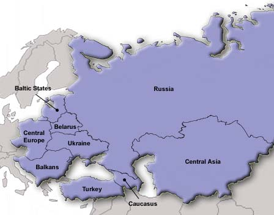
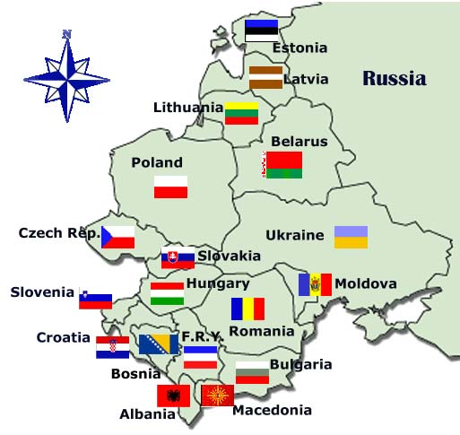
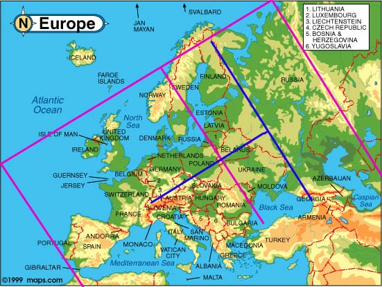

|
CENTRAL AND EASTERN EUROPE Where is located Romania? |
Where is located Romania: in Eastern Europe, in Southeast Europe, in Central Europe, in Europe at all? OK, maybe because the last question seems a bit strange to you, please keep reading.
We will begin with a true story. A Romanian citizen (name of the country purposely changed) voted with his feet and arrived in the country of his dreams - Switzerland. He met there a nice Swiss girl (actually his future wife, but he didn't knew the end of the story yet), and, during a flowery afternoon of May, the girl proudly presented her boyfriend to her Swiss mother. Because, understandably enough, guy's German was different from the local dialect, quite the first question he was asked by his future mother-in-law was about his country of origin. The question isn't unusual in Switzerland, where about each 6th citizen was at that time a foreigner. To mother's stupefaction, the guy answered that he came from... Romania, at what the poor mother commented, totally confused: "But you know, we are Europeans!" This happened in mid 1960s.
We show below some maps of the eastern Europe, found on the Web, and also publish near to them some classifications for some European countries, that follow criteria like positions related to North, South, East of West of the continent, or geographic criteria like Balkan, Baltic, Caucasus. Please note the different opinions concerning the location of different countries, and eventually try to find out a certain tendency.
| Russian and East European Network Information Center
(REENIC) Balkan: Albania Bosnia and Herzegovina Bulgaria Croatia Macedonia Romania Yugoslavia (Serbia and Montenegro) Central Asia Kazakhstan Kyrgyzstan Tajikistan Turkmenistan Uzbekistan |
Courtesy of GeographyIQ |
Central Europe: Czech Republic Hungary Poland Slovakia Slovenia Baltics: Estonia Latvia Lithuania Caucasus: Armenia Azerbaijan Georgia Eastern Europe: Belarus Moldova Russia Ukraine |

Returning to the
above story, just to mention that it happened during the period
of the Cold War and of the so called Iron Curtain, that separated two
different kind of societies, the free Western countries from the Socialist
closed camp. For this reason, for many inhabitants of the Western Europe the limit of
the Europe that they knew was at the East of Finland, West Germany, Austria
and Greece. This psychological limit was actually more than real, because too
few of acquaintances went there or came from there.
Fortunately, the political situation changed dramatically
after the year 1989, and consequently a lot of countries re-appeared on the Eastern horizon.
Even new
names, for a long time forgotten, like Croatia of Bosnia, were permanently
mentioned in the (always bad) news.
| Canadian International Development Agency Balkans - Albania - Bosnia and Herzegovina - Bulgaria - Croatia - Federal Republic of Yugoslavia - Macedonia - Moldova - Romania - Slovenia Baltic States - Estonia - Latvia - Lithuania |
 Courtesy of: Canadian International Development Agency |
Caucasus - Armenia - Azerbaijan - Georgia Central Asia - Kazakhstan - Kyrgyz Republic - Tajikistan - Turkmenistan - Uzbekistan Central Europe - Czech Republic - Hungary - Poland - Slovak Republic Belarus Russia Turkey Ukraine |
For this reason some Westerners became interested in what happens "there", and some of them even dared to personally visit these recently liberated countries. This brought with it a certain change of the external limits of Europe too, and many remembered some obscure geography lessons where they were told, that actually the Eastern limit of Europe are marked by the range of the Ural Mountains and the Ural river.
And suddenly a strange thing happened - not only people, but the very center of Europe started to wander too. There were the Czechs, Croats and other Romanians who begun to "pretend" that they never lived in the Eastern Europe. So that, little by little, on the one hand in order to be polite with them, on the other hand facing their strong geographical arguments, the center of Europe started to stepwise drift toward, well the center of the continent.
|
 Courtesy of: The East Central European Center |
Why did some countries move to the center of Europe? We'll answer it by a hopefully easily understandable "technical" note: A meridian that splits the Europe in two equal parts passes through... Belarus, Ukraine and Moldova Rep. One who knows that Switzerland is in the Central Europe and who will try finding out where is the symmetrical point, as referred to the mentioned meridian, in order to find out till where the Central Europe actually extends to the East, will have a big surprise. We had it too - the limit falls somewhere in Caucasus. Well, not only the times, but also the positions, we are meaning those memorized by our brains, they are changin' too.

Courtesy of: http://www.maps.com/explore/atlas/phy/europe.html
Please see on the above map
a graphical representation for the limits of the Central Europe. The lines
painted in this color show the Western (Portugal) and the Eastern (Ural)
limits of Europe, and the line between them, having the
same color splits the
Europe in two equal parts. Please notice that is passes through Lithuania,
Ukraine and Moldova. Optically, the line doesn't seem to be in the middle, but
please consider that in this projection of Europe, the continent is seen from
the height of Austria, and consequently the Eastern part of Europe is shown
compressed. At best, take a look at Europe as it appears on the Earth's globe, in
order of see the real dimensions.
The blue line that starts in Switzerland (a typical Central European
country) goes to the line that splits in two the continent and is then
prolonged by an approximate same distance to the East. The
blue line, parallel to
the Ural mountains, marks the Eastern limit of the Central Europe. At its
South part it crosses... Georgia.
Returning to the question that we have asked in the title (Where is located Romania?), we infer that Romania is clearly located in the Central Europe, and by no means in the Eastern Europe!
Credits: Many thanks to Dr. Georg Dobrovolny, Forum Ost-West, Berne, Switzerland, for his precious insights.
| Published:
01/22/2003. Revised:
05/17/2019
. Copyright © 2003 - 2019 by Victor Manta, Switzerland/USA. All rights reserved worldwide. |